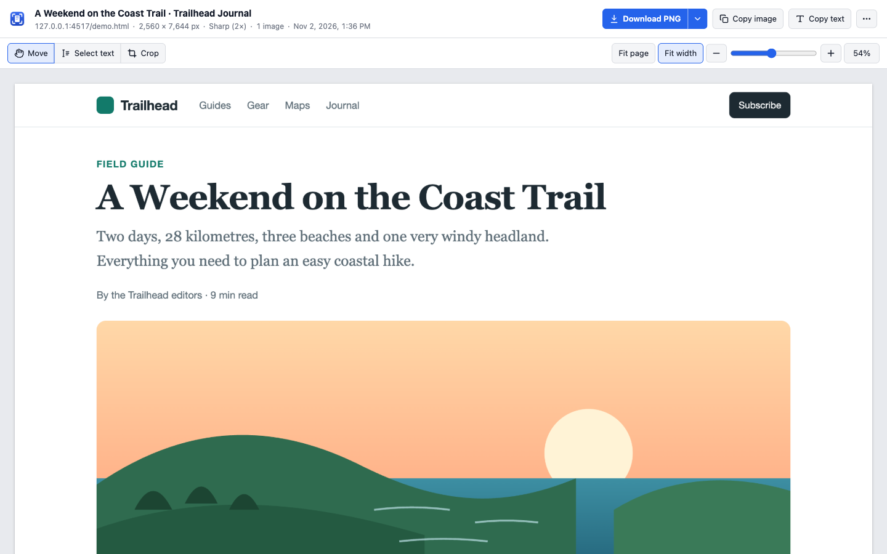
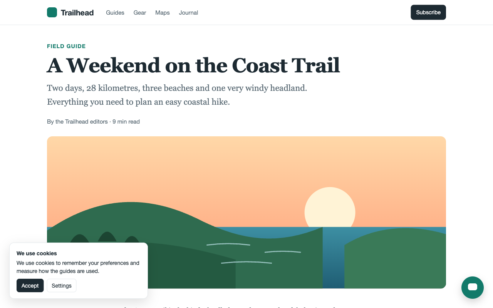
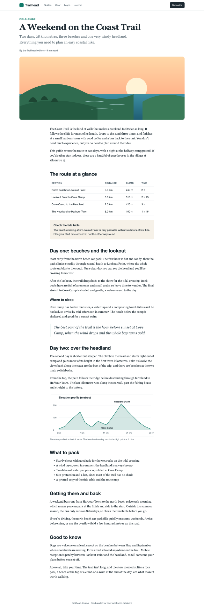
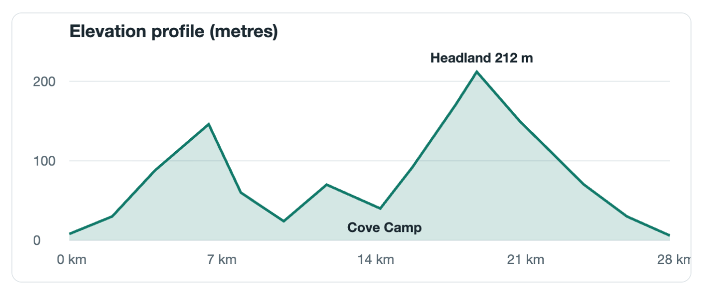
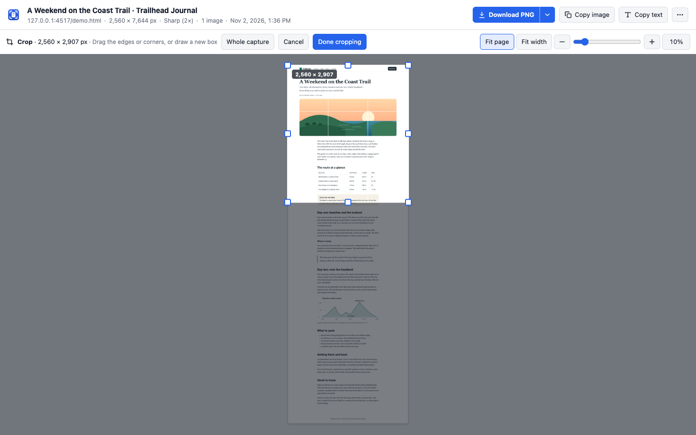
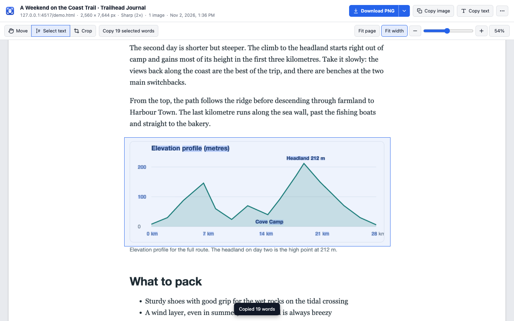

Full-page screenshots that never leave your computer
Capture whole web pages in sharp 2× to 4× quality. Save them as PNG or a searchable PDF, crop them, and copy their text, even from images.

Three steps, one click each
Click the icon
Or press ⌥⇧F (Alt+Shift+F). Capture the full page, just what's visible, an area you drag, or one element.
Watch it capture
The page scrolls on its own and the toolbar icon counts up. Cookie banners and chat bubbles stay out of the picture.
Save or copy
Download a PNG or PDF, copy the image or its text, or crop it first. Files go straight to your Downloads folder.
Clean captures, even on hard pages
Built for long articles, documentation, dashboards and app pages that scroll inside a panel.
The whole page, without the clutter
Sticky headers appear once instead of down every screen. Cookie banners and chat bubbles are left out, lazy-loading images are loaded first, and scrollbars are hidden. The page you're reading isn't changed.


Sharp, not stretched
Sharp mode draws the page again at 2×, 3× or 4× the pixels, so text and charts stay crisp when you zoom in or print. Long pages are stitched with no seams and no repeated rows.

Crop with handles
See the whole capture, then drag the edges or corners. Drag to the edge of the window and the page scrolls with you, so even very long pages are easy to trim. Every download and copy uses the crop.

Text from anything
Copy all the text in one click, or drag a box to copy just part of it. Text inside pictures and charts is read on your computer, and saved PDFs are searchable in any viewer.

PDF pages that fit
A4, Letter or Legal, every page the same width, breaks between lines of text, never through them.
Page address and date
Optionally print where and when a page was captured at the bottom of every PDF page.
Area and element
Drag a rectangle, or click a part of the page and use the arrow keys to widen or narrow it.
App pages
Pages that scroll inside a panel, like Gmail or Notion, are captured from top to bottom.
Pinch to zoom
Zoom the result with your trackpad, the slider or the keyboard, from the whole page down to single pixels.
Keyboard friendly
Shortcuts to capture from any tab, and ⌘S, ⌘C and ⌘⇧C on the result page.
Private by design, and tested to stay that way
LocalFullPageCapture makes no network requests. There's no account, no analytics and no upload, and everything it needs, including the text-recognition model, is inside the extension.
Every change runs automated tests that record each request the extension makes and fail if anything tries to leave your computer. The code is on GitHub for anyone to read.
activeTabAccess to the tab you're on, only when you click the icon or press a shortcut.scriptingPrepares that page for the capture and puts it back afterwards.storageYour settings and captures, kept in your Chrome profile.downloadsSaves the files you choose to download.clipboardWriteCopy image and Copy text. It never reads your clipboard.debuggerSharp mode. Only attached to the tab you capture, only while capturing. It's why Chrome's install dialog mentions reading and changing data on websites.
The things other tools charge for are included
| Feature | Often paid elsewhere | Here |
|---|---|---|
| Full-page capture | Sometimes | ✓ Free |
| Crop and export the result | Often | ✓ Free |
| Page address and date on PDFs | Often | ✓ Free |
| No limit on the number of captures | Often | ✓ Free |
| No watermark, no account | Sometimes | ✓ Free |
| Searchable PDFs and text from images | Rare | ✓ Free |
Add it to Chrome in a minute
LocalFullPageCapture isn't in the Chrome Web Store yet, so you add it yourself. You only do this once.
From the download (easiest)
- Download the latest LocalFullPageCapture zip and unzip it.
- Open
chrome://extensionsand turn on Developer mode (top right). - Click Load unpacked and choose the unzipped folder. Chrome lists what Sharp mode's permission allows (see the FAQ).
- Pin it: click the puzzle-piece icon in the toolbar, then the pin next to LocalFullPageCapture.
From the source code
- Install Node.js 20+ and pnpm 10.
- Clone the repository and run
pnpm installthenpnpm build. - Load the
dist/chrome-mv3folder with Load unpacked as on the left.
Each release lists a SHA-256 checksum, so you can check the download matches.
FAQ
Why does Chrome say the extension is "debugging" the tab?
That's how Sharp mode works. It asks Chrome to draw the page again at a higher resolution, which uses Chrome's debugging interface. The bar appears only while a capture runs and closes when it ends. If you'd rather not see it, turn Sharp mode off in Settings; captures then use your screen's resolution.
Why does Chrome warn that it can "read and change all your data"?
Sharp mode uses Chrome's debugger permission, and Chrome's install dialog describes everything that permission could allow. LocalFullPageCapture only attaches it to the tab you're capturing, only during the capture you started, and makes no network requests. You can turn Sharp mode off in Settings.
Is anything uploaded?
No. Captures, text recognition and file exports all happen on your computer. The extension doesn't make network requests at all, and its automated tests check that on every change.
Where are my files saved?
In your Downloads folder, inside a LocalFullPageCapture folder. You can change the folder and the file name pattern in Settings.
A page didn't capture correctly. What can I try?
For app pages that scroll inside a panel, use Pick scroll area… in the popup. If parts repeat or look odd, try Settings → Advanced → Method → Compatibility mode. Chrome doesn't allow extensions to capture its own pages (like chrome:// pages or the Web Store).
Does it work in other browsers?
It's built and tested for Google Chrome. Other Chromium browsers such as Edge and Brave may work but aren't tested.
Is it really free?
Yes. There's no paid tier, no trial and no limits.